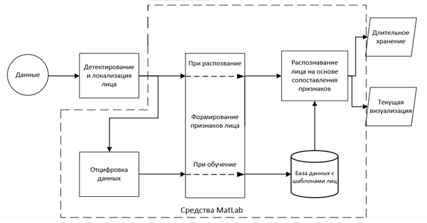
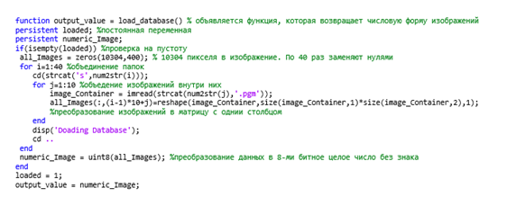
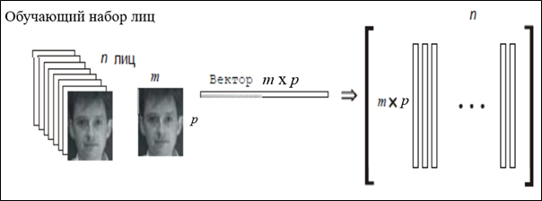
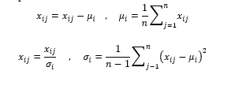
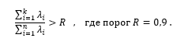
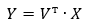
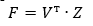
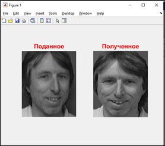
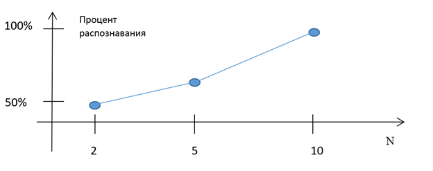

Распознавание лиц человека статистическими методами из пакета Matlab
Автор: Дручевский Д.В., Федяев О.И.
Источник: IV Международная научно-практическая конференция «Программная инженерия: методы и
технологии разработки информационно-вычислительных систем» (ПИИВС-2022) – Донецк: ДонНТУ, 2022.
Аннотация
Дручевский Д.В., Федяев О.И. Распознавание лиц человека статистическими методами из пакета Matlab. Статья посвящена разработке программной модели распознавания людей по изображению лиц с использованием алгоритма Eigenface и инструментов пакета MatLab. Алгоритм распознавания основан на статистическом методе главных компонент. Этапы подготовки и распознавания в модели реализованы на программном уровне и описаны математически. Анализ качества распознавания проведен на разных объёмах обучающего множества.
Введение
Обработка изображений всегда была активной областью исследований. В области обработки изображений существует множество усовершенствований, инноваций, разработок и модификаций. В настоящее время научно-практическая деятельность в области компьютерного зрения постоянно расширяется, наполняясь новыми идеями и разработками. По оценкам специалистов среднестатистический человек может идентифицировать знакомое лицо в толпе с точностью 97,53%. Но это меньше по сравнению с современными алгоритмами, которые добились точности 99,8%. А в последние несколько лет они достигли практически совершенства [1].
Существует много способов распознавания лица: метод гибкого сравнения на графах, нейронные сети, скрытые марковские модели, статистические методы и другие [2]. Все они по-разному решают проблемы, влияющие на качество систем распознавания – это изменение освещённости, положения головы, размера лица и др. В последние годы эффективные системы распознавания были построены на основе свёрточных нейронных сетей [2]. Для упрощения создания систем распознавания создано несколько специализированных библиотек (TensorFlow, Keras), предоставляющие разработчикам хорошие инструменты [2]. В последнюю версию пакета Matlab также включены программные средства для разработки систем распознавания [2].
Цель выполненной работы состоит в исследовании эффективности методов и инструментальных средств, предлагаемых пакетом Matlab, для разработки программных моделей автоматического распознавания лиц, позволяющих строить на их основе реальные системы видеоконтроля за людьми. В частности, авторы проанализировали эффективность применения метода главных компонент (PCA) для решения задачи распознавания лиц [3]. Этот метод успешно применяется в статистике при интеллектуальном анализе данных для уменьшения пространства признаков без существенной потери информации. В задачах распознавания, где большие объёмы данных и важна скорость их обработки, вполне обосновано применить его для представления изображения лица вектором малой размерности (главных компонент), который сравнивается затем с эталонными векторами, занесёнными в базу данных.
Разработанная программная модель распознавания лиц построена на основе алгоритма Eigenface, использующего статистический метод главных компонент. Такой подход к автоматическому распознаванию не требует машинного обучения или свёрточной нейронной сети.
Схема распознавания лиц на основе программных средств пакета Matlab
Классическое решение задачи распознавания лиц человека включает несколько типовых этапов. Видеопоток изображений, на которых расположены лица людей, формируется видеокамерой в реальном масштабе времени. Далее выполняется детектирование, локализация и нормализация лиц на изображении. На третьем этапе формируются характерные признаки распознаваемого лица, по которым путём сравнения с базой эталонных лиц осуществляется распознавание человека. На рис.1 показана функциональная схема описанного классического подхода к распознаванию людей по лицам.
Такая система компьютерного зрения должна предусматривать этап обучения на распознавание заданного контингента людей. Для этого предварительно проводятся следующие этапы: подготовка данных о распознаваемых людях и их оцифровка, формирование признаков лиц методом обучения и загрузка в базу данных необходимой информации о лицах.

Рис. 1. Структура системы распознавания лиц на основе MatLab
В данной статье рассматривается только программная реализация средствами пакета Matlab отдельных блоков структуры на рис.1, которые обведены пунктирной линией. Таким образом, изображения лиц поступали не из видеопотока, а брались из готовой базы, а именно, из стандартной датасет лаборатории ORL (AT&T), в которой изображения лиц представлены на однородном фоне с разрешением 92х112 пикселей [3]. Эта датасет содержит изображения лиц 40 людей в 10 различных ракурсах (всего 400 изображений). Изображения из датасет получены с различной освещённостью, положением головы, с очками и без, открытыми и закрытыми глазами.
Рассмотрим технологию подготовки набора данных ORL для распознавания лиц средствами пакета Matlab. Для отдельного человека создана своя папка с именами(s1, s2, s3, … ,s40), каждая из них содержит 10 файлов с числовыми именами (1, 2, 3, … , 10) изображений этого человека с фронтальным лицом [4]. Изображения представлены в оттенках серого цвета.
Для оцифровки и загрузки изображений лиц из базы данных в модуль распознавания была создана на языке Matlab специальная функция load_database, текст которой изображён на рис. 2. Функция возвращает числовую форму изображений.

Рис. 2. Фрагмент кода программы для пакета Matlab загрузки видеоданных о лицах
Функция load_database весь обучающий набор лиц преобразует функцией reshape в одну общую матрицу данных all_Images (10304x400), где каждый столбец представляет собой один экземпляр плоского изображения лица (92x112 = 10304 пикселей), развёрнутого в столбец. Все лица обучающего набора приведены к одному размеру. Внутри двух циклов с помощью функции strcat происходит объединение папок, а потом с помощью функции imread выполняется загрузка всех изображений в матрицу all_Images с последующим преобразованием данных в 8-битные целые числа без знака. Схема преобразования показана на рис.3. На этом рисунке n=400, m=92, p=112, m x p = 10304.

Рис. 3. Преобразование обучающего набора лиц в одну общую матрицу
Факт загрузки базы лиц в модуль распознавания отмечается присвоением единицы постоянной переменной loaded, чтобы не происходила повторная загрузка во время работы модуля распознавания. Примеры изображений лиц из датасет ORL показаны на рис.4.

Рис. 4. Примеры лиц из базы данных ORL, используемой для обучения модуля распознавания
Распознавание лиц на основе статистического подхода
В данной работе задача распознавания лиц решалась методом главных компонент (Principal component analysis, PCA) [5]. Этот метод хорошо проработан математически, достаточно простой в реализации по сравнению с методами машинного обучения или моделями искусственных нейронных сетей. Кроме того, в пакете Matlab есть все средства для его программной реализации.
Для реализации интерфейса системы будет использоваться HTML и CSS. Для функционирования базы данных WEB-системы будет использоваться свободная реляционная система управления базами данных СУБД MySQL версии 5.7. Разработанная физическая модель данных (рис. 3) содержит подробную информацию о каждом атрибуте, а также описание всех таблиц. В качестве Web-сервера был выбран OpenServer, который содержит Apache. Apache позволяет подключать различные модули, добавляющие в него новые возможности, а также он обладает надежностью, гибкими настройками и безопасностью.
Основное достоинство метода – значительное уменьшение размерности пространства признаков, сохраняющих индивидуальность описания; способность выявлять различные «изменчивости» в обучающей выборке изображений лиц и описывать эту «изменчивость» в базисе нескольких ортогональных собственных векторов.
Для работы модуля распознавания на этапе подготовки данных была сформирована специальным образом (см. рис.3) матрица всех изображения all_Images (обозначим её Х), размерность которой определяется по одной из координат количеством изображений n , а по второй - количеством пикселей в каждом изображении лица d = m x p. Для большей объективности проведена нормализация матрицы Х с учётом 0-го среднего и 1-й дисперсии:

Для нормализованной матрицы Х(d x n) находим ковариационную матрицу S(d x d), элементы которой определяют корреляции между всеми парами переменных (пикселей). Ковариационная матрица S набора Х разлагается на матрицу собственных векторов W(d x d) и диагональную матрицу собственных значений Λ(d x d), которые связаны каноническим уравнением
Ранжируя собственные вектора W в порядке убывания их собственных значений 𝜆, оставляем только первые k векторов по правилу

В результате отбрасывания менее значимых векторов мы из матрицы W оставляем главные компоненты (признаки) в виде подматрицы V(d x k), в столбцах которой располагаются наиболее значимые собственные вектора. Это первый шаг к уменьшению размерности исходных данных, т.к. k < d. Учитывая, что исходная матрица изображений лиц Х осталась неизменной (не считая операцию нормализации), можно трансформировать Х, т.е. переориентировать данные Х с исходных осей на оси, представленные главными компонентами. Это выполняется путём перемножения транспонированной матрицы главных компонент V(d x k) на исходный набор Х(d х n), в результате получим новое более компактное описание эталонной базы лиц Х (all_Images) в виде другой матрицы Y(k x n)

Данный метод оставляет в Y самые значительные особенности описания лиц в форме Х . Таким образом, используя ограниченное количество собственных векторов, получаем сжатую аппроксимацию входных изображений лиц, которые затем храним в базе данных в виде векторов коэффициентов, служащих одновременно ключами поиска в базе данных лиц.
Полученный один раз на обучающем множестве лиц набор собственных векторов V используется для кодирования всех остальных изображений лиц, которые представляются взвешенной комбинацией этих собственных векторов. Поэтому процесс распознавания нового лица Z(d x 1) заключается в сравнении его двойника F(k x 1), получаемого путём трансформации Z по осям главных компонент V.

C векторами компактной базы лиц Y на основе евклидовой метрики [6] . На рис. 4 изображён результат выполнения модуля распознавания [6].

Рис. 5. Результат обработки изображения приложением
Оценка качества модели распознавания
Анализ разработанной программной модели распознавания проведен на стандартной базе данных ORL, включающей 400 лиц. В качестве тестовых изображений выбирались случайным образом лица, входящие в используемую базу. Проведено исследование влияния количества лиц одного человека в обучающем множестве на качество распознавания (см. рис 6). Из экспериментов было выявлено, что при подаче на обучение 10 изображений 1 человека вероятность правильного распознавания составляет около 94%.

Рис. 6. Зависимость качества распознавания от размера обучающего множества: N - количество лиц одного человека в обучающем множестве
Заключение
Разработана программная модель распознавания людей по изображению лиц с использованием алгоритма Eigenface и инструментов пакета MatLab. Алгоритм распознавания основан на статистическом методе главных компонент. Этапы подготовки и распознавания в модели реализованы на программном уровне и описаны математически. Анализ качества распознавания проведен на разных объёмах обучающего множества.
Выполненная работа показала, что используемый алгоритм распознавания, основанный на методе главных компонент, является крайне простым и может быть использован для распознавания лиц наряду с нейронными сетями. У алгоритма есть недостатки, такие как: чувствительность к уровню освещённости видеоизображений, низка скорость распознавания и слабая дискриминация между классами лиц.
Литература
- Хабр [Электронный ресурс] - Режим доступа: https://habr.com/ru/company/droider/blog/568764/ -Загл. с экрана.
- Брилюк Д.В., Старовойтов В.В. Распознавание человека по изображению лица нейросетевыми методами - 2002. - вып. 1. - с. 4-11. - URL: http://uiip.bas-net.by/structure/l_ori/starovoitov/Starovoitov_Publication_section/11_Starovoitov02prep.pdf.
- ML | Face Recognition Using Eigenfaces (PCA Algorithm) [Электронный ресурс] - Режим доступа: https://www.geeksforgeeks.org/ml-face-recognition-using-eigenfaces-pca-algorithm/ - Загл. с экрана.
- Face Recognition using Matlab [Электронный ресурс] - Режим доступа: https://www.nzfaruqui.com/face-recognition-using-matlab/ - Загл. с экрана.
- Face Recognition using Eigenfaces and Distance Classifiers [Электронный ресурс] - Режим доступа: https://onionesquereality.wordpress.com/2009/02/11/face-recognition-using-eigenfaces-and-distance-classifiers-a-tutorial/ - Загл. с экрана.
- Распознавание изображений. Алгоритм Eigenface [Электронный ресурс] - Режим доступа: https://habr.com/ru/post/68870/ - Загл. с экрана.